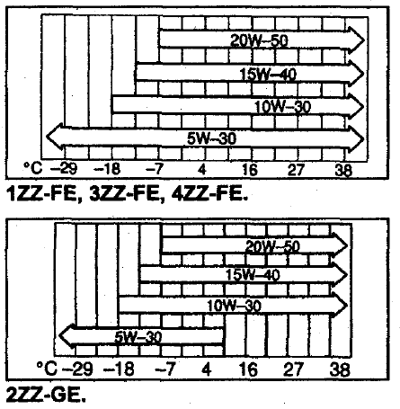
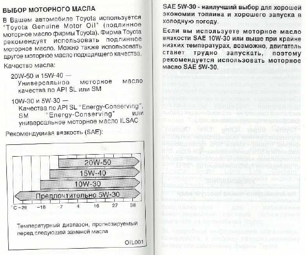

Выбор моторного масла
1. Используйте масло по спецификации API - не ниже SJ.
2. Вязкость (SAE) подбирайте согласно диаграмме температурного диапазона, соответствующей условиям эксплуатации автомобиля до следующей замены масла.

Выдержка из официальной документации на Toyota Corolla E120:

Предпочтительно масло 5W-30 которое имеет наибольший температурный диапазон. Его имеет смысл использовать зимой.
Стандартное масло, которое идет в новых Тойотах, называется Toyota Genuine Motor Oil.